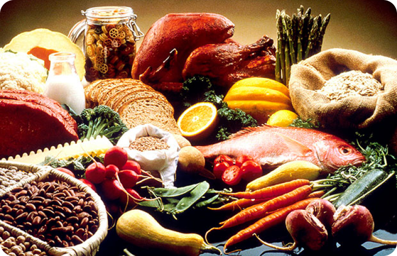

- Mais de 75 receitas para escolher todas as semanas
- Clássicos familiares, receitas globais e opções saudáveis
- Opções à base de plantas, sem glúten e sem laticínios
- Ingredientes frescos de fornecedores confiáveis
- Carne fresca de alta qualidade que é Brasileira sempre que possivel
- Todas as receitas são experimentadas, testadas e apreciadas pelos nossos chefs e clientes